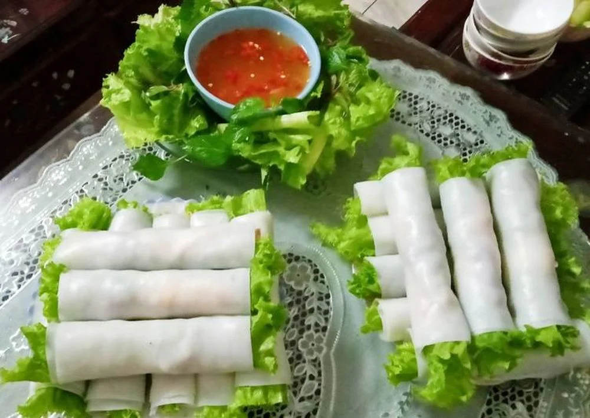

Phở là một trong những món ăn truyền thống của ẩm thực Việt Nam, là niềm tự hào và cũng là một trong những món ăn được ưa thích trên thế giới. Món phở được biết đến với nhiều món khác nhau như: phở bò, phở gà…Nhưng bên cạnh đó, có thêm sự sáng tạo, phong phú khác nhau mà người nấu ăn đã chế biến ra những món phở khác nhau như: hở chiên phồng, phở trộn, phở xào… và đặc biệt là phở cuốn. Phở cuốn được biết đến là món ăn có nguồn gốc từ phở, xuất hiện đầu tiên ở các quán phở ngã tư phố Ngũ Xã, đường Nguyễn Khắc Hiếu, Hà Nội. Những quán này thường mở về đêm để phục vụ các dịch vụ về ăn uống của các du khách thường ghé tới để xem bóng đá. Trong một lần khách đến ăn thì quán hết nước dùng phở mà chỉ còn ít bánh phở. Một sự sáng tạo của khách là lấy bánh phở tráng mỏng ra, để khô lại sau đó cuộn với thịt, rau thơm và kết hợp cùng nước chấm đậm đà riêng. Mọi người sau khi được thưởng thức món ăn mới lạ này xong đều cảm thấy lạ miệng và đầy ấn tượng. Kể từ đó, món phở cuốn được ra đời và nhiều người biết đến và yêu thích. Kể từ đó, món phở cuốn đã được mọi người ghi nhớ bằng sự yêu thích và mới lạ, trở thành món ăn mang nét văn hóa riêng của đất Hà Thành mà tất cả khách du lịch đều yêu thích.
Phở cuốn được nhận xét là nét chấm phá đặc sắc của văn hóa ẩm thực Hà Nội nói riêng và nước ta nói chung. Tô điểm thêm cho bức tranh ẩm thực mảnh đất Hà Nội, phở cuốn đã thu hút được nhiều khách du lịch mỗi lần đặt chân đến. Điểm riêng của món phở cuốn này được nhận xét là dai mềm với từng cuộn phở tròn thơm, với nguyên liệu chính là thịt và nhiều nguyên liệu khác nhau đem đến một hương vị riêng mà ai cũng thấy thú vị và ấn tượng riêng. Bánh phở tráng được dùng để cuộn tròn các nguyên liệu như: thịt bò, trứng, giò chả, dưa chuột, cà rốt, rau xà lách, rau mùi,… Phở cuốn mang ý nghĩa đủ đầy, vẹn nguyên, hoà quyện với nhau, thể hiện mong muốn gắn kết, sum vầy. Bên cạnh là món ăn quen thuộc được yêu thích hàng ngày, phở cuốn còn được xuất hiện trong những mâm cơm hay mâm cỗ trang trọng.
Đối với phở cuốn cũng như tất cả các món ăn khác để có được sản phẩm hoàn hảo chúng ta phải lưu ý từ khâu chọn nguyên liệu. Dưới đây là những nguyên liệu cần cho món phở cuốn này:
Bánh phở. Thịt thăn bò. Bún sợi. Rau: Xà lách, rau mùi tàu, rau húng, kinh giới. Dưa chuột, cà rốt. Đậu hũ. Trứng gà hoặc trứng vịt. Lạc rang sẵn. Hành khô, tỏi, ớt, giấm, chanh, hạt tiêu. Dầu ăn, đường, nước mắm, dầu hào.
Phở ngũ sắc được xem là sự sáng tạo của món phở cuốn thông thường. Để được sản phẩm như món phở cuốn ngũ sắc chúng ta cần có 5 màu sắc hoàn toàn từ nguyên liệu rau củ tự nhiên. Đây là món vừa ngon miệng, vừa lạ đặc biệt nhất phố Ô Chợ Dừa. Màu màu tượng trưng cho mỗi vị, mỗi chất riêng: màu đỏ của gấc, màu xanh của rau cải, tim tím củ dền, màu vàng của bí ngô.
Điều này không chỉ thu hút người nhìn, mà còn tạo ra hương vị mới lạ, độc đáo trong cách thưởng thức của người ăn. vị ngọt của rau củ nhưng vẫn giữ được độ mềm dai của bánh phở. Nhân cuốn phở cũng được quán sáng tạo thêm bằng nhiều vị khác nhau như: Gà nấm, Bắp bò chua ngọt, Tai heo chua ngọt, nhân Gà xông khói và nhân Cá chiên xù. Tất cả hòa quyện cùng với nhau tạo ra sự mới mẻ mà người thưởng thức không thể quên.